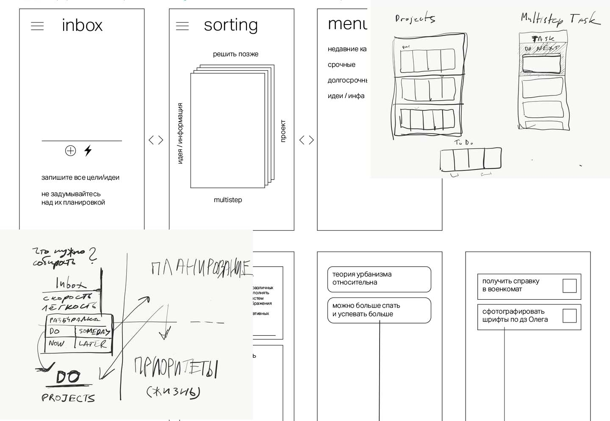

4D тру ту-ду
Сервис для планирования, основанный на лучших практиках управления личными задчами
Проблема
Пользователь обращается к планировщикам, потому что быстрый темп жизни и огромное количество информации просто не позволяют хранить список постоянно обновляющихся задач в голове. Психологи считают, что мозг обычного человека может одновременно удерживать в памяти три темы. Занятому человеку приходится помнить о гораздо большем количестве дел. Бессистемное планирование отнимает слишком много энергии у человека, так как приходится помнить план того, что предстоит сделать. К сожалению, современные планировщики не только не упрощают процесс постановки и отслеживания целей, а наоборот его усложняют. В большинстве своем они представляют из себя свободную систему списков, не предлагая никакого психологического взаимодействия.
Целевая аудитория
В последнее время мир резко ускорился. Количество информации, которая сегодня выходит в топовом еженедельнике, содержит столько же новостей, сколько человек, живший 200 лет назад, узнавал за всю свою жизнь.
Все больше и больше людей попадают в ловушку прокрастинации, отсутствия приоритетов и слабой самодисциплины. Вроде постоянно чем-то занят, а результатов нет.
Наша целевая аудитория — это люди, желающие эффективно распоряжаться своим временем. Уметь распределять его так, чтобы выполнялись не только «горящие» дела, но и планы, которые двигают нас вперед, цели на будущее.
Большим спросом сервисы подобного рода пользуются среди предпринимателей, IT специалистов, разработчиков, занятых людей с непрекращающимся списком задач. Вот несколько отзывов пользователей.
Решение
Сервис для планирования и визуализации целей, позволяющий благодаря 4 этапам разобрать все существующие планы/задачи пользователя и тем самым освободить его от надобности держать все в голове.
Отличительные черты
Отсутсвие страха пустого листа.
Отсутствие необходимости предварительно строить структуры для заполнения данными.
Быстрая и удобная связь между всеми этапами планирования.
Вы открыли это приложение и нет никаких преград между вашим потоком мыслей, идей и планов и необходимостью как можно скорее выгрузить их из головы.
Принцип 4D
- Сбор
- Разбор
- Прояснение
- Выполнение
мозговой штурм (выброс всех идей из головы). На данном этапе наш сервис должен предоставить пользователю возможность легко и просто, в игровой форме, записать все, что он хотел бы/должен сделать
на данном этапе пользователь сортирует свои задачи. Появляется несколько разделов (н-р: срочные дела, проекты, мультистеп задачи, информация/материалы)
здесь пользователь может более детально поработать со своими делами. Разбить работу на более мелкие этапы, придумать первый шаг. После он может дополнить цель ссылками на полезные ресурсы/картинками т.е. как можно больше визуализировать свои цели/задачи. Временная шкала поможет установить желаемое время достижения цели и отследить прогресс пользователя.
система напоминаний, календарь, возможность вносить корректировки и отмечать свой прогресс
Конкуренты
в мире существует ок. 17 млн. to-do приложений
Основные типы:
- grocery list (список для похода в магазин)
- Canban
- GTD
- записки в текстовых редакторах
- экстраординарные менеджеры задач
разбор конкурентов в отдельном документе
Риски
— развить разное видение проекта у каждого участника и работать в разные стороны
— не суметь совладать с backend частью проекта
— не добиться желаемого психологического вовлечения пользователя и сделать просто еще одно ту-ду
Команда
Карина Валеева, Мария Кондратенко, Ксения Чеснокова, Тимофеев Данила и Захар День (куратор).
Команда должна быть сплоченной и иметь цельное и общее понимание проекта — работать над одним продуктом и чувствовать его дух.
В начале пути у нас есть по 20% от проекта. Далее роль в проекте определяется вкладом в каждого из нас в проект.
Распределение по специализации (design, backend, frontend) произойдет после стадии формирования скелета проекта.
Технологии
Методики:
- дизайн-мышление
- далб-даймонд
- дизайн-системы
Инструменты:
- paper
- trello
- программы из линейки adobе
- sketch
Языки, фреймворки, библиотеки:
- HTML/CSS(SCSS)
- JavaScript
- Ruby on Rails
- Различные фреймворки (React)
- Пакеты для работы с базами данных
- Библиотеки